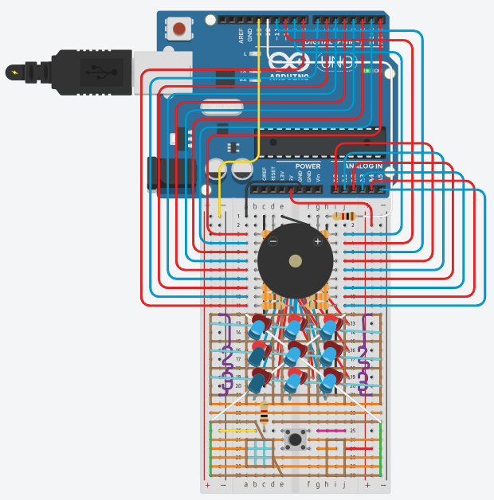

自己紹介
成果物
tinkercad

3X3スロット(3年生時の情報処理の自由課題)
下の方にある押しボタンスイッチを押すとスロットが回り出します。もう一度押すと１列目が止まり、もう一度押すと２列目が止まります。更に押すと３列目も止まり、上中下の横一列または斜めの合計5パターンのうち1つ以上揃うとが音が鳴ります。(1つ揃った時と、2つ以上揃った時でなる音が違う)さらにもう一度押すと、またスロットが回り始めます。柄は、「赤と青が光る」「赤のみ光る」「青のみ光る」「どちらも光らない」の4パターンを用意しました。下の方の配線はほとんどグラデーションです。

arduinoやmicro:bitなどのマイコンを一切使用せず作成しました。
ルール説明: このゲームは3x3のマス目で、青と赤の色を使ってプレイします。2人で遊ぶことができます。先攻と後攻が決まり、交互に空いているマスに自分の色を置いていきます。縦・横・斜めのいずれか1列に自分の色を3つ並べたプレイヤーが勝利です。 プレイ方法: 1.最初にリセットボタンを押してゲーム盤を初期化します。 2.ターンが回ってきたら、自分の色（青または赤）を置きたいマスのボタンを選んで押します。 3.縦・横・斜めのいずれかに自分の色を3つ並べるまで、交互にマスに色を置いていきます。 4.ゲームをまた遊びたい場合は、リセットボタンを押すとゲーム盤がリセットされます。
python
Pythonのtkinterを用いて3Dオセロを作りました。

ボロノイ図を生成し、エリアごとの繋がりから、4色で塗り分けれる組み合わせを探し、塗ります。詳細はgithubリンクに
その他
Scratch
使用経験・スキル
基礎研究
基礎研究は、高専4年生のカリキュラムの一環で、4月から11月までの約半年間、5人程度のチーム(全5班)でものづくりに取り組むプロジェクトです。
11月には高専祭で、基礎研究で作成した成果物を展示・発表します。製作をするにあたり、学校からdobot M1というロボットアームが貸し出されます。
今回の全体のテーマは「メカトロの技術で寿司屋を救おう」です。
私は既製品のロボットアームと班員が制作した機構の制御、寿司の画像認識(位置検出、画像識別)、注文用アプリ、通信を担当しました。主にpythonを使用しました。


11月には高専祭で、基礎研究で作成した成果物を展示・発表します。製作をするにあたり、学校からdobot M1というロボットアームが貸し出されます。
今回の全体のテーマは「メカトロの技術で寿司屋を救おう」です。
私は既製品のロボットアームと班員が制作した機構の制御、寿司の画像認識(位置検出、画像識別)、注文用アプリ、通信を担当しました。主にpythonを使用しました。